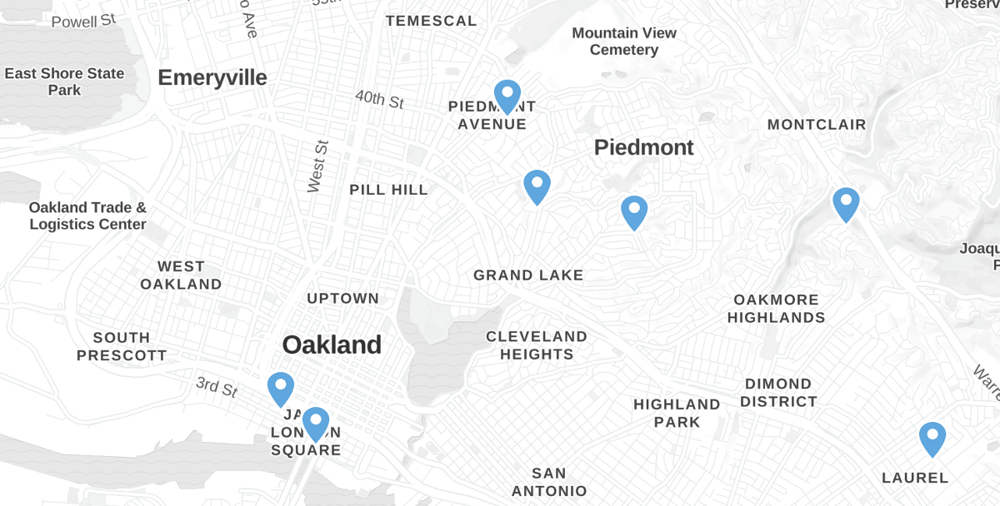
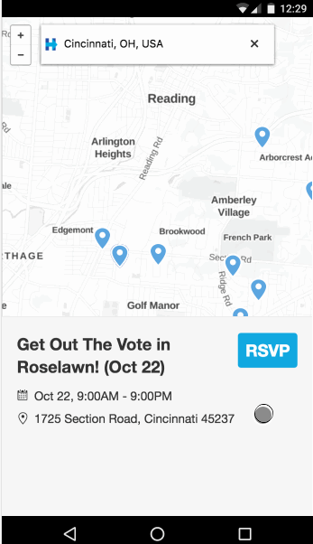
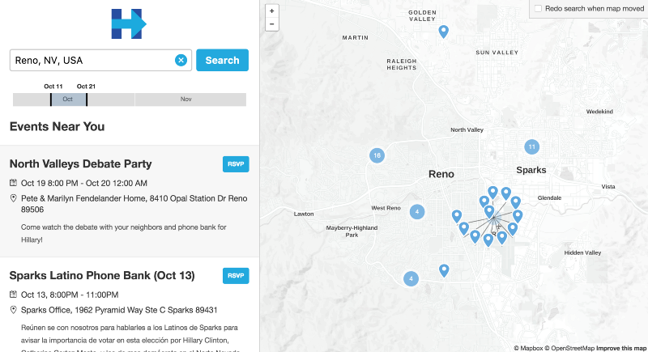

HRC campaign events and volunteer opportunities around Oakland, CA
Everything happens somewhere. In the home stretch of this epic presidential campaign season, location awareness can impact the razor-thin vote margins we expect to see in battleground states.
Hillary Clinton’s campaign has an excellent, centralized database of rallies, phone banks and canvassing efforts, all of which need volunteers. In order to lower the bar to participation as much as possible, the digital volunteers of DevProgress constructed an application on top of the campaign events database -it shows events near you.
We built it with two user groups in mind:
1. Hillary supporters with the urge to contribute
These folks are galvanized by the historic stakes of the election, and are willing to do more than just vote, even if they don’t have a lot of time. We wanted them to be able to quickly find a nearby volunteer opportunity and pitch in with whatever resources they have. The mobile swipe interface was designed particularly with this group in mind.
Search — swipe — swipe — swipe — bingo — click — sign up

Swipe to make an impact
2. Field offices and volunteer coordinators
The geographic perspective can give this group a sense of context. Are the canvassing events too clustered in certain neighborhoods? Are there enough phone banks accessible to the students at the nearby campus? The desktop layout is more of a dashboard with this group in mind, giving the full regional overview:

An events dashboard
We hope that by putting the campaign on the map, we can get everyone the information they need to put Hillary over the top.